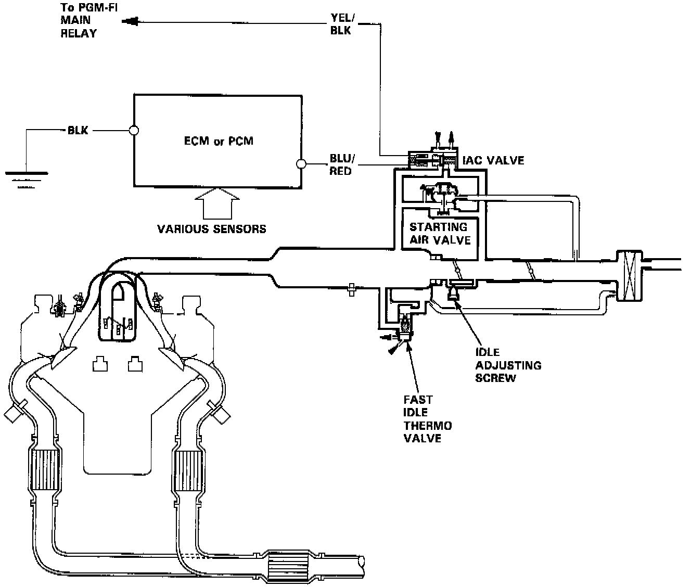
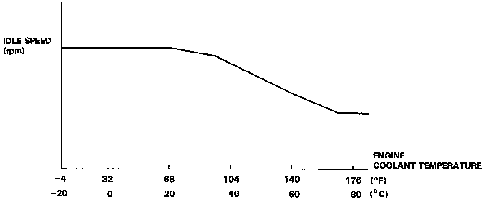

Idle Control System

The idle speed of the engine is controlled by the Idle Air Control (IAC) valve.
The valve changes the amount of air bypassing into the intake manifold in response to electric current controlled by the ECM (Engine Control Module) (M/T) or PCM (Powertrain Control Module) (A/T).
When the IAC valve is activated, the valve opens to maintain the proper idle speed.

1. After the engine starts, the IAC valve opens for a certain time. The amount of air is increased to raise the idle speed about 150-300 rpm.
2. When the engine coolant temperature is low, the AC valve is opened to obtain the proper fast idle speed. The amount of bypassed air is thus controlled in relation to the engine coolant temperature.
A. When the idle speed is out of specification and the Malfunction Indicator Lamp (MIL) does not blink code 14, check the following items:
- Adjust the idle speed
- Air conditioning signal
- ALT FR signal
- A/T gear position switch signal
- Neutral switch signal (M/T)
- Clutch switch signal (M/T)
- Starter switch signal
- Brake switch signal
- PSP switch signal
- Fast idle thermo valve
- Hoses and connections
- IAC valve and its mounting 0-rings
B. If the above items are normal, substitute a known-good IAC valve and readjust the idle speed.
^ If the idle speed still cannot be adjusted to specification (and the MIL does not blink code 14) after (AC valve replacement, substitute a known-good ECM or PCM and recheck. If symptom goes away, replace the original ECM or PCM.